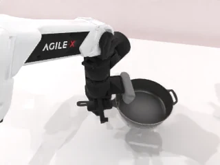
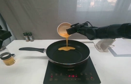
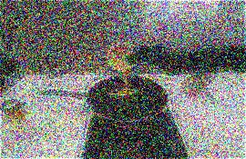
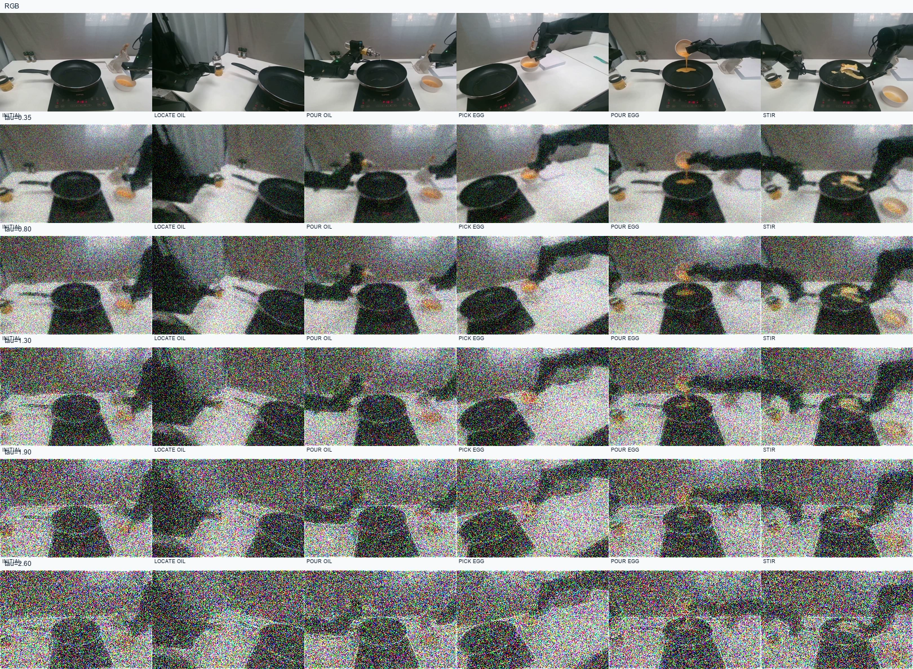
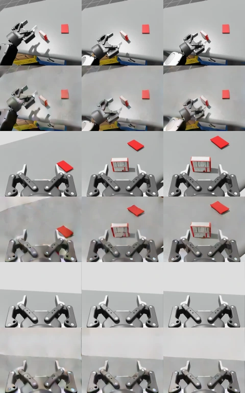

Retain the evidence.
Task-guided history inversion preserves source evidence and visible changes while transforming appearance during training.
Evidence-Aware Active Vision
for World-Action Models
Learn what to keep.
Decide where to look.
A unified world–action model that connects task-guided history learning with physical head and arm control.
Moving the camera can reveal a useful relation. It can also move a critical cue out of view.
ActiveWAM treats active vision as a retain–acquire problem: learn which evidence should survive visual changes, then jointly decide how to move the head and hands. A recent, view-aware observation history connects the two.
Active vision manipulation requires a policy to control both its camera and its end-effectors, yet camera motion determines which evidence remains visible within finite observation windows. Acquiring a new view can displace task-critical cues, while retaining a view forgoes potentially useful observations. We formulate this as an evidence-aware retain–acquire problem and present ActiveWAM, a unified world–action model that learns observation and manipulation jointly. Training-time inversion constrains a frozen video prior by task-bearing source evidence and visible temporal changes. At deployment, the policy generates bimanual and pan/tilt actions from view-aware raw history and updates context from newly measured RGB observations. Future-video prediction serves as a co-training signal. RoboTwin-AV extends 50 manipulation tasks with executable pan/tilt control and automatically generated demonstrations.
Task-guided history inversion preserves source evidence and visible changes while transforming appearance during training.
Head motion and bimanual manipulation share one generator. Staying still is a valid observation action.
Execute a short action prefix, acquire actual RGB, and rebuild context from the available observation window.
Explore real RGB, source-aligned head poses, and key moments across three domains.

Head telemetry is unavailable for this recording.
These sequences visualize source demonstrations and camera motion.
Download sequence ↓Learning to preserve task evidence and learning to control observation, within a unified world–action model.
A frozen Wan video prior transforms each camera’s observed history independently. Task-weighted source preservation and temporal-change constraints guide partial inversion. Raw and accepted transformed histories share the same original action and future-video targets.
Inversion is used during training. Deployment conditions on raw history and returns one joint action trajectory; future-video prediction is a co-training signal.
Explore our recent visualization studies on the six key stages of a real cooking sequence.


These previews use designed RGB perturbations to illustrate a visual target. The levels are display settings, not diffusion timesteps or model measurements.

Archived design study. The original “tau” labels denote synthetic noise multipliers, not the paper’s inversion parameter.

Archived partial-inversion cache. Raw/transformed pairs are shown for head, left wrist and right wrist, with three history timestamps per row. This is a prototype, distinct from the illustrative real-robot previews above.
Design studies from the previous visualization iterations; image post-processing, not checkpoint outputs.
Comparing manipulation success across visual and camera-pose shifts. Select a benchmark and condition to explore the results.
50 tasks · 3 seeds · 100 episodes per task, seed and condition.
+20.0 pp vs. Fast-WAMCompound success over the raw-history control (53.3% vs. 41.7%).
Head travel per episode for joint learned control, compared with 4.10 rad for object tracking.
Full-task successes across three physical kitchen tasks; 20 attempts per task.
Manuscript-reported results; evaluation protocols and exact values are available above. The gallery presents source demonstrations separately from the scored evaluations.
@misc{activewam2026,
title = {ActiveWAM: Evidence-Aware Active Vision
for World-Action Models},
author = {Anonymous Authors},
year = {2026},
note = {Manuscript}
}